א׳. כללי מצוות תחומין
הצורך להטלטל בדרכים ולנסוע ממקום למקום נובע מחסרונו של האדם, שאין הוא מוצא את סיפוקו ופרנסתו במקומו, ועל כן הוא נזקק לנדוד ולצאת מתחומו. אבל עניינה של השבת שינוחו בה כל ישראל מטורח ודאגה, ויתבוננו בשלמות הפנימית של הבריאה, ויודו לה' שבחר בנו מכל העמים ונתן לנו את תורתו, ויתענגו על ה' ועל טובו.
וזהו שתיקנו חכמים תחום שבו מותר להתהלך בשבת, ומעבר לו אסור לצאת. ותחום השבת הוא מקום שביתתו של אדם ועוד אלפיים אמה לכל רוח. אלפיים אמה הם אלפיים צעדים של אדם ממוצע, והם כ-912 מטרים.1
אם היה שובת בשדה, מקום שביתתו הוא ארבע אמות על ארבע אמות, כשיעור שישכב על הארץ ויפשוט ידיו ורגליו, ומעבר לכך מותר לו לילך אלפיים אמה לכל רוח.2 ואם שבת בעיר או בישוב, כל המקום המיושב נחשב למקום אחד, ומודדים אלפיים אמה מחוצה לו (ועי' בהלכה ח).
לדעת הרמב"ם והסמ"ג, יסוד איסור תחומין מן התורה, אלא שהאיסור מהתורה הוא שלא יצא אדם מחוץ למקום שביתתו יותר משנים עשר מיל (24,000 אמה), שהם קרוב לאחד עשר ק"מ (10,944 מטר), כשיעור מחנה ישראל במדבר, שנאמר (שמות טז, כט): "שְׁבוּ אִישׁ תַּחְתָּיו, אַל יֵצֵא אִישׁ מִמְּקֹמוֹ בַּיּוֹם הַשְּׁבִיעִי". ולדעת הרמב"ן, הרא"ש, הרשב"א ורוב הראשונים, פסוק זה נאמר על איסור טלטול ברשות הרבים, אבל איסור תחומין, גם מעבר לשנים עשר מיל, מדברי חכמים.3
תיקנו חכמים למי שצריך לצאת בשבת מחוץ לתחום כדי להשתתף בסעודת חתן או כדי לשמוע שיעור, שיניח 'עירוב תחומין', ועל ידי כך יעתיק את תחומו לצד הנצרך (כמבואר להלן בהלכות יב-יד). היוצא מחוץ לתחום שבת, הפסיד את תחומו ואין לו אלא ארבע אמות שבהן הוא יכול ללכת (כמבואר להלן בהלכה יא).
הֶעָרוֹת (3)
- לשיטת הגר"ח נאה, שנוסדה על פי הרמב"ם (שהסכימו לו רוב ככל הפוסקים), אמה – 48 ס"מ, ואלפיים אמה – 960 מטר. ולשיטת 'חזון איש' אמה – 57.6 ס"מ, ואלפיים אמה 1152 מטר. וכיוון שהתברר שהדרהם הטורקי שלפיו חישב הגר"ח נאה את שיטת הרמב"ם גדול מהדרהם שהיה בימי הרמב"ם, יש לילך לפי החישוב המדויק, למרות שיש בזה חומרה. ושיעור הנפח צריך להתאים לשיעור האורך, שכן אמרו חכמים שארבעים סאה נכנסים באמה על אמה על שלוש אמות. לפיכך כתב בספר מידות ושיעורי תורה לרב בניש ה, כד, שלפי הרמב"ם, אורך האמה הוא – 45.6 ס"מ, ואלפיים אמה 912 מטר. בנוסף לכך, אורך האמה בפועל בסביבות 45 ס"מ. ועי' בפנה"ל ברכות י, 11. וכך נכתוב בכל השיעורים. ועי' לעיל כט, 1.
- לשו"ע שצו, א, מקומו של אדם הוא 4 אמות על 4 אמות, וכדין טלטול ברה"ר וכרמלית. והרמ"א כתב שלעניין תחומין יש אומרים ארבע אמות לכל רוח, שיחד יוצאים שמונה אמות על שמונה אמות.
- הסתפקו חכמים אם יש איסור תחומין מעל עשרה טפחים, כי אולי מפני שאינו מקום הילוך, אין בו איסור כלל. למעשה, כאשר הספק דרבנן, הלכה כמיקל. לפיכך, בימים ובנהרות שגם הרמב"ם מודה שאין איסור מהתורה, שאינם דומים להליכה במדבר, אם הוא מעל עשרה טפחים מהקרקע, אין איסור תחומין (עירובין מג, א, שו"ע או"ח תד, א). לשו"ע או"ח רמח, ב, מודדים י' טפחים מתחתית הספינה לקרקע, ולרא"ם מרגליו לקרקע, וכתבו שועה"ר, משנה ברורה רמח, יד, שבשעת הצורך אפשר להקל. אבל ביבשה מעל י' טפחים, לדעת כמה פוסקים יש להחמיר כדעת הרמב"ם ביותר מי"ב מיל (רמ"א, או"ח תד, א).
ב׳. ריבוע התחום
קבעו חכמים שמקום שביתתו של האדם הוא מרובע, וכן תחום השבת שלו מרובע. היינו שאם אדם שבת בשדה ומקומו הוא ארבע אמות, אין מודדים את מקומו בעיגול שקוטרו ארבע אמות, אלא מקומו הוא ריבוע של ארבע אמות, באופן שהוא מרוויח את הזוויות. ואם שבת בישוב או עיר, למרות שצורתם עגולה, מכניסים אותם לתוך ריבוע או מלבן, באופן שהוא מרוויח את הזוויות (משנה עירובין נג, א).
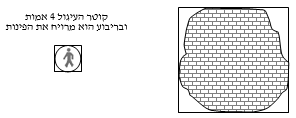
לאחר מכן מודדים אלפיים אמה לארבע רוחות, ושוב יוצרים ריבוע או מלבן שהוא תחום השבת, וכך יוצא שעל ידי הריבוע הוא מרוויח פעם נוספת את הזוויות.4
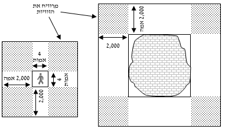
הלכה זו שמרבעים את העיר למדנו מהשטח שנתנו ללוויים מחוץ לעריהם, שנאמר (במדבר לה, ה): "וּמַדֹּתֶם מִחוּץ לָעִיר אֶת פְּאַת קֵדְמָה אַלְפַּיִם בָּאַמָּה וְאֶת פְּאַת נֶגֶב אַלְפַּיִם בָּאַמָּה וְאֶת פְּאַת יָם אַלְפַּיִם בָּאַמָּה וְאֵת פְּאַת צָפוֹן אַלְפַּיִם בָּאַמָּה וְהָעִיר בַּתָּוֶךְ".
הטעם הפשוט לריבוע התחום, מפני שקשה מאוד למדוד ולשרטט תחום עגול, כי כמעט בכל נקודה ונקודה יהיה צורך למדוד אלפיים אמה בנפרד. ולעומת זאת, כאשר רוצים לשרטט תחום מרובע, צריכים לבצע ארבע מדידות לארבע רוחות העולם, ואח"כ לשרטט קו ישר לכל רוח, וזה התחום.
ויש לזה גם טעם רוחני, שהאדם וחייו נעים במעגל, גם צורת איבריו מעגלית, וכך גם מופיעים רצונותיו ומחשבותיו. העיגול רומז לאין סוף, שאין לו התחלה ואין לו סוף, ולכן קשה לאדם להגשים את השאיפות שלו. והתיקון לכך נעשה על ידי הכנסת הרעיונות העגולים האין סופיים לתוך מסגרת מרובעת, שתסייע לו להגשים אותם. וזהו תחום שבת, שנועד לתת כלי לקליטת קדושת השבת וברכתה. וזה הטעם שערי הלוויים, שנועדו לגילוי האמונה בעולם, מוקפות בתחום מרובע.
הֶעָרוֹת (1)
- כאשר מודדים אלפיים אמה ממקום ישוב, לדעת הרמב"ם ושו"ע שצח, ה, מודדים מגבול בתי העיר או מגבול העירוב (כדעת חכמים בעירובין נז, א). ולדעת הרא"ש והרמ"א, מוסיפים קרפף לעיר, שהוא מקום לחצר שלפני הבתים, ושיעורו שבעים אמה ושני שליש (כ-32 מטר), ודינו כדין העיר עצמה, ומשם מודדים אלפיים אמה (כדעת ר' מאיר שם. ועי' משנה ברורה שצח, כא, ובאו"ה 'וכן')(ועי' בהלכה ח, שבשתי ערים סמוכות גם לשו"ע יש קרפף)
ג׳. תחום שבת יחודי לכל אדם
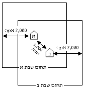
תחום שבת הוא יחודי לכל אדם לפי מקום שביתתו. שאם היו גרים בשדה שני אנשים שבתיהם רחוקים זה מזה אלף אמה, הרי שלכל אחד תחום שבת משלו, חלקו חופף לתחום של חברו וחלקו אינו חופף.
גם על בהמתו וחפציו של אדם, בין יהודי ובין גוי, חלים דיני תחומין. לפיכך, אם הלך אדם עם טליתו עד לקצה תחומו, ורצה חבירו שתחום שבת שלו שונה לשאול ממנו את הטלית, אסור לו ללכת עם הטלית מעבר לתחום שבת של בעל הטלית (שו"ע או"ח שצז, ג).
ואם היו שניים שותפים בטלית אחת, אינם יכולים ללכת עמה אלא בתוך תחום שבת של שניהם (שו"ע או"ח שצג, ט).
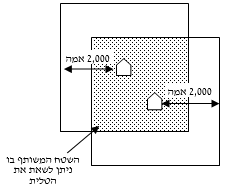
ד׳. השובת בתוך העיר והשובת מחוצה לה
השובת בעיר או בישוב, בין היו גרים שם יהודים או גויים, כל השטח המיושב ברציפות, נחשב כמקום אחד, ומודדים אלפיים אמה מחוצה לו. וגם אם היה שם רווח בין הבתים, אם הם מוקפים גדר או 'עירוב', כל השטח המוקף נחשב כמקום אחד, ומודדים אלפיים אמה מחוצה לו (כמבואר להלן בהלכה ח).אלא שכל זה הוא רק למי ששבת בתוך העיר או בתוך ריבועה, אבל מי ששבת בשדה ליד העיר, יש לו אלפיים אמה לכל רוח, ואם נסתיימו אלפיים האמה שלו באמצע העיר, נסתיים שם תחומו, ואין אומרים שכל העיר עבורו כד' אמות.5
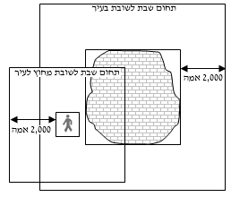
הֶעָרוֹת (1)
- ואם כל הישוב (העיר) נכנס בתוך אלפיים אמה שלו, כולו נחשב כד' אמות, וממשיכים למדוד את האלפיים אמה לאחר הישוב (שו"ע או"ח תח, א). כזה:
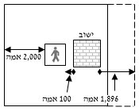
ה׳. צורת המדידה בזמן חז"ל וכיום
קבעו חכמים כללים כיצד מודדים את תחום השבת באופן שיהיה קרוב ביותר לשיעור המדויק. ואמרו (עירובין נז, ב): "אין מודדין אלא בחבל של חמישים אמה, לא פחות ולא יותר". שאם ימדדו בחבל ארוך יותר, יתקשו למתוח אותו משום כובדו, ונמצא השיעור מתקצר. ואם ימדדו בחבל קצר יותר, יש לחשוש שימתחו אותו יותר, ונמצא השיעור מתרחב. ועוד אמרו שצריך לאחוז את החבל כנגד הלב, שאם אחד יאחזנו כנגד ראשו והשני כנגד רגליו, נמצא השיעור מתקצר (שו"ע או"ח שצט, א-ג). עוד אמרו, שאם יגיעו לגיא יעמדו שני המודדים משני צידיו וימדדו אותו בקו אוויר. ואם היתה שם גבעה, ירימו תרנים, וימתחו את החבל מעל הגבעה. ואם אין אפשרות להבליע את מדידת הגיא או הגבעה, מפני שהם רחבים יותר מחמישים אמה, ימדדו אותם בחבל של ארבע אמות, כשזה שעומד למעלה אוחזו כנגד רגליו, וזה שלמטה כנגד ליבו. ואם המדרון תלול יותר, עד שקשה לחשב באופן זה, משערים לפי אומד. ואם היה שם צוק שרוחבו פחות מד' אמות, אין מחשבים אותו כלל (עירובין נח, א-ב, שו"ע או"ח שצט, ד-ה).
ואמרו שאין סומכים בעניין זה אלא על מדידה של מומחה, היינו זה שיודע לחשב את השיעור יפה. ואם שני מומחים מדדו את התחום ויצאו להם שיעורים שונים, הולכים אחר זה שהרחיב את השיעור, מפני שדין תחומין מדרבנן והלכה כמיקל (עירובין נח, ב; נט, א; שו"ע או"ח שצט, ז-ט). וכאשר אדם נקלע למקום שלא מדדו בו את תחום השבת, והוא נצרך ללכת לצורך מצווה, ילך אלפיים פסיעות בינוניות, שזהו שיעור אלפיים אמה לערך (עירובין מב, א; שו"ע או"ח שצז, ב; משנה ברורה שצז, ה).
כיום עדיף לקבוע את תחום השבת על פי מפות שמבוססות על צילומי אוויר או בעזרת מכשירים שנעזרים בלוויינים, שעל פיהם ניתן למדוד את המרחקים באופן המדויק ביותר. ואין לומר שצריך למדוד דווקא כפי שקבעו חכמים, מפני שכל מגמתם היתה להתקרב לשיעור המדויק לפי הכלים שעמדו לרשותם, בלא להטריח את המודדים יותר מדי. וכיום שיש לנו דרך מדידה שהיא גם יותר מדויקת וגם יותר נוחה, עלינו לבצע את המדידה בדרך זו.
ו׳. ריבוע העולם וריבוע העיר
כפי שלמדנו (הלכה ב), מרבעים את מקום שביתתו של האדם, שאם היה שובת בשדה, יש לו ארבע אמות על ארבע אמות, ואם היה שובת בעיר, מכניסים את העיר לתוך מרובע. ומן המרובע הזה מודדים אלפיים אמה לכל רוח.
ועתה נוסיף שכאשר מרבעים את הישוב, מרבעים אותו לפי רוחות השמים (שו"ע או"ח שצח, ג).6 ואם יש לו ריבוע לכיוון שונה מריבוע העולם, יש לעשות את הריבוע לפי אותו הכיוון (שו"ע או"ח שצח, א).
דוגמאות לפי ריבוע העולם:
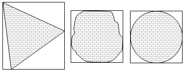
דוגמאות מוסכמות לריבוע שלא לפי רוחות העולם:
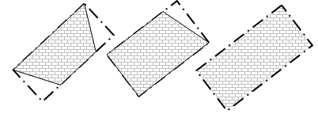
וכאשר יש לישוב נטייה מסוימת לריבוע שונה מריבוע העולם, נחלקו הפוסקים כיצד מרבעים. יש סוברים שרק כאשר יש הכרח שלא ללכת לפי ריבוע העולם הולכים לפי ריבוע העיר (שועה"ר שצח, ג, ח"א עו, יד). ולרוב הפוסקים, כל שיש נטייה ברורה לכיוון מסוים, הולכים לפי אותו כיוון, למרות שאינו לפי ריבוע העולם (עי' הערה 7). ובכל מקרה של ספק צריכה הרבנות המקומית להכריע.
דוגמאות למצבי ביניים שיש בהם נטייה ברורה לכיוון שונה מריבוע העולם, מפני שיש צלע ישרה לאורך כל העיר (ציור א), וכן כאשר יש לעיר זווית ישרה (ציור ב), ואז הולכים אחר הזווית הישרה ולא לפי ריבוע העולם.7
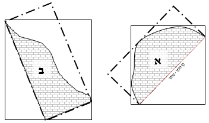
יש לדעת שהשובת בשדה ומקומו הוא ריבוע של ארבע אמות על ארבע אמות, רשאי לברור לו את כיוון הריבוע כרצונו, ולפי הכיוון שברר לו יהיה גם הכיוון של ריבוע תחומו (עי' להלן הלכה יב).
הֶעָרוֹת (2)
- אין בני העיר יכולים להחליט לרבע את העיר שלא לפי ריבוע העולם כדי שיוכלו להרוויח את הזווית לכיוון שהם רוצים לילך אליו, כי הדין הוא שצריך לרבע את העיר כריבוע העולם, וכפי שנאמר לגבי ריבוע ערי המקלט (במדבר לה, ה): "וּמַדֹּתֶם מִחוּץ לָעִיר אֶת פְּאַת קֵדְמָה אַלְפַּיִם בָּאַמָּה וְאֶת פְּאַת נֶגֶב אַלְפַּיִם בָּאַמָּה וְאֶת פְּאַת יָם אַלְפַּיִם בָּאַמָּה וְאֵת פְּאַת צָפוֹן אַלְפַּיִם בָּאַמָּה וְהָעִיר בַּתָּוֶךְ" – לפי רוחות עולם. וכן משמע מהרמב"ם (כח, ז) ושו"ע או"ח (שצח, ג). וכ"כ משנה ברורה שצח, ז, וחזו"א קי, כג. וי"א שרשאים בני העיר להחליט לרבע שלא לפי ריבוע העולם, והיחיד נגרר אחר החלטת הציבור (רבנו יהונתן עירובין טז, א, 'אם'; פרישה שצח, א; מרכבת המשנה שבת כז, ב; נו"ב תניינא או"ח נא).
- בעיר א ישנה צלע ישרה לכל אורך העיר, ולמדו מעיר העשויה כקשת שמרבעים אותה לפי המיתר (מאירי נה, א). וכן כתב חזו"א או"ח סימנים: פ, קי.
ובעיר ב, לדעת רוב הראשונים והאחרונים, מרבעים לפי הזווית (כ"כ לגבי עיר העשויה כגאם: רשב"א, ר"ן, ריטב"א, מאירי). ויש אומרים שגם בציור א' וגם בציור ב' צריך לרבע לפי ריבוע העולם (שועה"ר שצח, ג; ח"א עו, יד). ויש אומרים, שבכל המקרים המסופקים, יש לעשות את הריבוע שמוסיף פחות שטחים לעיר (חזו"א קי, כג). והלכה כדעה הראשונה שהיא דעת רוב הפוסקים, וכך הציור למעלה. אמנם כאשר הזווית אינה ברורה, יכולה הרבנות המקומית להחליט ולסמוך על הסוברים שיש לרבע לריבוע העולם.
ז׳. אימתי אין מרבעים
כפי שלמדנו, מרבעים את העיר, ועל ידי כך נשכרים את הזוויות. אלא שאמרו חכמים שבמצבים מסוימים אי אפשר למתוח קו ישר על ריבוע כל העיר, מפני שיש בה מובלעות גדולות מדי של מקום שאינו מיושב, כדוגמת עיר שעשויה כקשת, או כזווית ישרה (כאות היוונית גמא, גאם – Γ). זה הכלל, כאשר יש ארבעת אלפים אמה בין שני צידי המובלעות, אין מרבעים אותם.
מובלעת של זווית ישרה:
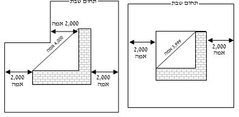
מובלעת של עיר כקשת:
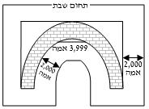
ח׳. חיבורי ישובים
כל זמן שבתי העיר רצופים, היינו שאינם רחוקים זה מזה יותר משיעור 'קרפף', שהוא כשיעור חצר גדולה, כ-32 מטר לערך, הרי הם נחשבים רצופים. ואם היה ביניהם יותר משיעור זה, אין הבתים מתחברים זה לזה, ולכל אחד תחום שבת משלו.9
ואם היו בתי העיר רצופים כמקובל, והיה שם בית שיצא מהשורה, כל זמן שאינו רחוק יותר מ-32 מטר מהבית הקרוב, הרי הוא מגדיל את תחום הריבוע, וכן אם היה אחריו עוד בית ועוד בית, אפילו מהלך כמה ימים, כל זמן שהבתים אינם רחוקים זה מזה יותר מ-32 מטר, הרי שמותחים את תחום הריבוע כדי להכיל גם אותם. אבל אם היה שם בית רחוק יותר מ-32 מטר, אין מכניסים אותו בתוך המלבן.
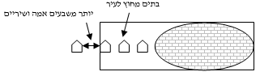
אם היו שתי שכונות סמוכות זו לזו, אם המרחק שביניהן גדול משיעור שתי חצרות, שהוא יותר מ-64 מטר, הרי שכל אחת מהן עיירה בפני עצמה, ומרבעים אותה לבדה ומודדים מן הריבוע שלה אלפיים אמה לכל צד. ואם המרחק שבין שתי השכונות כשיעור שתי חצרות, כ-64 מטר, הרי הן נחשבות כמקום אחד, ומרבעים את שתי השכונות יחד. כדי שקבוצת בתים תחשב לשכונה, צריך שיגורו בה לפחות חמישים דיירים(עירובין ס, א. ואם אין בה 50 דיירים אבל יש בה שלוש חצירות של שני בתים כל אחת, או אפילו שישה בתים עם חצר לכל בית, נחשבת שכונה, משנה ברורה שצח, לח, חזו"א או"ח קי, יט)
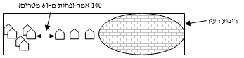
ואם המקום מוקף חומה או עירוב, כל הבתים והשכונות שבתוכו נחשבים כמקום אחד, למרות שהחומה או העירוב מתרחקים מהבתים האחרונים יותר משיעור 'קרפף', ולמרות שיש לפעמים הפרש גדול בין הבתים והשכונות.
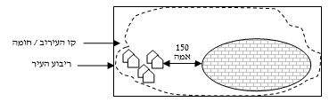
הֶעָרוֹת (1)
- שיעור 'קרפף' הוא: 70 אמה ו-4 טפחים, ולחישוב העדכני: 32.224 מטר, ושיעור כפול: 64.448 מטר (כמבואר בהערה 1). אולם כדי שלא להאריך נכתוב מעתה למעלה ששיעור 'קרפף' 32 מטר, ושיעור כפול: 64 מטר.
ט׳. הבלעת ריבועים
ריבוע של ישוב אחד שנכנס לתוך ריבועו של ישוב אחר, גם כשאין שם 'עירוב' שמחברם, כיוון שהריבועים נכנסים זה לתוך זה, הרי שהם מחברים את שני הישובים, ועושים להם ריבוע חדש שמכיל את שניהם כאחד. ומותר לתושבי שני הישובים ללכת אלפיים אמה מחוץ לאותו ריבוע משותף.
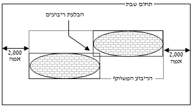
ואם היה בין זוויות שני הריבועים יותר משיעור ארבעת אלפים אמה, כפי שלמדנו (בהלכה ז) אין מרבעים את כולו, אלא נותנים לכל זווית אלפיים אמה לכל צד.
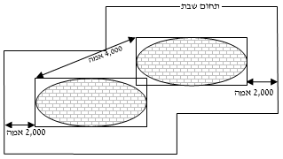
י׳. דין הערים הגדולות
כבישים שבתוך עיר שרוחבם יותר מ-64 מטר, אם הם חוצים את כל העיר, הרי שהם מחלקים אותה לשני חלקים, ויש לחשב את תחום השבת לכל חלק בנפרד. וכן שטחים פתוחים, כדוגמת גינות נוי ופארקים, שרוחבם יותר מ-64 מטר, שחוצים את כל העיר, מחלקים אותה לשני חלקים, ויש לחשב את תחום השבת לכל חלק בנפרד.
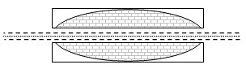
ולכאורה לפי זה, נתיבי איילון חוצים את תל אביב לשתי ערים, אלא שהואיל ויש 'עירוב' שמקיף את כל תל-אביב והערים הסמוכות לה, הרי שה'עירוב' מחבר את כל החלקים יחד. בנוסף לכך, גם כאשר יש כביש רחב שחוצה את העיר, אם ריבועי שני החלקים שמצידי הכביש מתחברים, הרי שהם נעשים כתחום אחד, ויוצרים להם ריבוע אחד משותף, כמבואר לעיל. בנוסף לכך, יש מקום לומר שהואיל והכבישים הללו נועדו לשימוש כל בני העיר, וכן השטחים הפתוחים שבתוך העיר, כדוגמת גינות, נועדו לשימוש כל בני העיר, הרי הם כחלק מהעיר ואינם חוצים אותה.
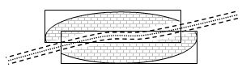
ויש חולקים וסוברים שאין העירוב והבלעת ריבועים ושימוש כל בני העיר, מחברים את שני החלקים שמצידי הכביש או הגינה שחוצים את העיר לכל ארכה. והעיקר כדעת המקילים. אבל נכון להחמיר שמי שחצה את הכביש הרחב, לא יתרחק ממנו יותר מי"ב מיל, מפני שיש סוברים שמעבר לי"ב מיל האיסור מהתורה(עי' לעיל הלכה א)
י״א. היוצא מתחום שבת ודברים הבאים מחוץ לתחום
מי שיצא חוץ לתחום, בין יצא במזיד בין יצא בשוגג, הפסיד את תחומו, ואין לו אלא ארבע אמות בלבד (שו"ע או"ח תה, א, לעיל הערה 1). ואם היה צריך לנקביו, התירו לו ללכת למקום שיוכל להתפנות בצניעות, ואחר כך יוכל להתרחק מעט ממקום שהתפנה עד שלא יגיע אליו ריח רע, באופן שיוכל לומר דברים שבקדושה. ומשם לא ילך יותר מארבע אמות (שו"ע או"ח תו, א).
ואם יצא מתחום שבת והגיע לתוך מקום שמוקף מחיצות או 'עירוב' – אם יצא במזיד, אין לו אלא ארבע אמות, ואפילו היה בתוך בית, לא יצא מחוץ לארבע אמות. ואם יצא בשוגג או בעל כורחו – רשאי להלך בכל המקום המוקף (שו"ע או"ח תה, ו; באו"ה 'אבל').
אבל היוצא מתחום שבת שלו כדי להציל נפשות, תקנו חכמים שכאשר יגמור את פעולת ההצלה, יש לו אלפיים אמה לכל רוח. ואם תחומו החדש נפגש עם תחומו הקודם, רשאי לחזור למקומו, ויש לו תחום ביתו כאילו לא יצא (עירובין מד, ב. ופעמים שאף הקילו שיחזור למקומו, כמבואר לעיל כז, י, 12).
מי שאירעה לו תקלה ונחת בנמל התעופה אחר כניסת השבת, רק בעת נחיתתו נקבע תחום השבת שלו, ואסור לו לצאת ממקומו יותר מאלפיים אמה לכל צד.11 וכיוון שבדרך כלל שדה התעופה מוקף גדר, ויש בו מקום שנועד לשינה, הרי שכולו נחשב כארבע אמות, ומותר לו להלך מחוצה לו אלפיים אמה. אבל אם שדה התעופה אינו מוקף גדר, המקום שלו נקבע לפי רגע נגיעת גלגלי המטוס בקרקע, ואם המטוס המשיך לנסוע על המסלול אלפיים אמה, יצא מתחום השבת שלו, ואסור לו ללכת יותר מארבע אמות, וממילא עליו להישאר במטוס עד צאת השבת. אך אם דורשים ממנו לצאת, או שהוא צריך לצאת כדי להתפנות, מותר לו לצאת, ואם יגיע למקום שמוקף במחיצה, יוכל ללכת בכל התחום המוקף, הואיל ויצא מתחומו בעל כורחו (שו"ע או"ח תה, ו). ואם טיסתו היתה לצורך מצווה, למרות שהמטוס נסע על המסלול קילומטר שלם, ואותו שטח אינו מוקף מחיצה, מותר לו ללכת אלפיים אמה מפתח המטוס (שו"ע או"ח רמח, ד; משנה ברורה רמח, לב).
מי שהגיעה ספינתו לנמל בשבת, מותר לו לרדת מהספינה וללכת אלפיים אמה לכל רוח, משום שעד שהגיעו לנמל היה מעל עשרה טפחים מקרקע הים, ולא חל עליו תחום שבת, ורק כשירד ליבשה נקבע תחומו. ואם הנמל מוקף מחיצה, מודד אלפיים אמה מעבר למחיצה (שו"ע או"ח תד, א, לעיל הערה 3).
אם יצא מחוץ לתחום וחזר בשגגה או באונס לתוך התחום שלו, רשאי להלך בכל תחומו (שו"ע או"ח תו, א). ואם יצא מן התחום במזיד, גם אם חזר בשגגה, הפסיד את תחומו, אבל מותר לו להלך בכל עירו (שו"ע או"ח תה, ח).
כשם שאסור לאדם לצאת מתחומו בשבת, כך אסור להוציא את חפציו מאותו התחום. ואם הוציא פירות שלו בשגגה, למרות שאסור לטלטלם מחוץ לארבע אמות, מותר לאוכלם. ואם הוציאם במזיד, אסור לאוכלם (שו"ע או"ח תה, ט; משנה ברורה תה, נב, ועי' לעיל כו, 6).
גוי שהביא פירות מחוץ לתחום שבת, אם הביאם בשביל עצמו או בשביל גוי אחר, מותרים לכל ישראל באכילה, אלא שאסורים בטלטול מחוץ לארבע אמות. ואם הביאם לתוך בית או מקום מוקף גדר או 'עירוב', מותר לטלטלם בכל השטח המוקף. ואם הביאם בשביל ישראל, אסורים לזה שהביאם בשבילו ולכל בני ביתו עד שיגיע זמן שיוכל להביאם במוצאי שבת (שו"ע או"ח שכה, ח).12
הֶעָרוֹת (2)
- עי' בהערה 3 שהסתפקו חכמים אם יש איסור תחומין ביבשה מעל עשרה טפחים. וכיוון שהמטוס עבר בטיסתו יותר מי"ב מיל בשבת, לרמב"ם ודעימיה, שסוברים שתחום שבת מהתורה י"ב מיל, יש להחמיר שמי שנחת בשבת, אין לו אלא ד' אמות בלבד. אולם לרוה"פ אין תחומין מהתורה כלל, וממילא בספק מקילים שאין תחומין למעלה מעשרה טפחים, ורק בעת הנחיתה נקבע תחומו, ולכן יש לו אלפיים אמה לכל רוח. וכך כתבתי למעלה. ומ"מ גם לרמב"ם, אם המקום מוקף מחיצה, כיוון שהגיע לשם בשגגה, מותר לו ללכת בכולו. (עי' רמ"א, או"ח רמח, ד, משנה ברורה לב; ישכיל עבדי ח, כ, סב; ילקוט יוסף רמח, ד)
- שני דינים יש בחפצים שהובאו מחוץ לתחום: האחד, קשור לדיני תחומין, והוא שחפצים שיצאו מתחומם נחשבים תמיד כאדם שיצא בשוגג או באונס, כיוון שאין בהם דעת. ועל כן אם הגיעו למקום מוקף מחיצה, מותר לטלטל אותם בכל המקום המוקף. אמנם אם הובאו למקום שאינו מוקף מחיצה, יש להם ארבע אמות בלבד. ואם הושבו למקומם – יש להם את התחום הראשון.
דין שני הוא דין הנאה ממעשה שבת, ובו כוונת מוציא הפירות קובעת. שאם הוציא במזיד – אסור ליהנות ממעשיו, ואסורים באכילה. ואם הוציא בשוגג, כיוון שהוא איסור דרבנן – מותר לאוכלם (באו"ה שיח, א, 'המבשל', ועי' בהרחבות כו, ד, א). ואם גוי הביאם מחוץ לתחום, אם הביאם עבור עצמו או עבור גוי אחר – מותר לישראל לאוכלם, ואם הביאם לישראל – אסור לאותו יהודי ובני ביתו לאוכלם עד שיעבור זמן שיוכל להביאם במוצאי שבת בהיתר.
קבעו חכמים שגם לחפצי גוי יש תחום שבת והם קונים שביתה במקומם, שאם היה מותר לטלטלם בלא הגבלה היו יכולים לטעות שגם לחפצי יהודי אין תחום שבת. אבל דברי הפקר אין להם תחום שבת (שו"ע או"ח תא, א).
י״ב. עירוב תחומין
הרוצה ללכת בשבת למקום שנמצא מחוץ לתחום שבת שלו, יכול להתיר לעצמו את ההליכה על ידי 'עירוב תחומין'. כלומר על ידי שיקבע את מקום שביתתו במקום ה'עירוב'. ובזה הוא מערב את התחום שלא יכל ללכת בו מקודם עם התחום שהיה יכול ללכת בו, ולכן נקרא שמו 'עירוב תחומין'. אלא שכל מה שהרוויח לצד אחד הפסיד בצד השני, שאם הניח את העירוב אלפיים אמה לכיוון מזרח, מותר לו ללכת מביתו ארבעת אלפים אמה לכיוון מזרח, ואילו לכיוון מערב אסור לו ללכת אפילו אמה אחת.
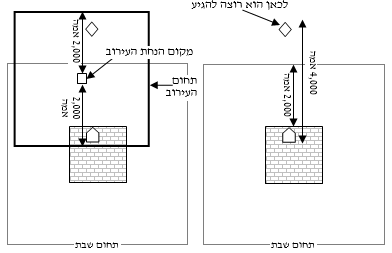
קביעת ה'עירוב' נעשית באחת משתי דרכים: הראשונה, על ידי שהייה במקום העירוב בכניסת השבת. שהואיל ושהה שם במשך כל בין השמשות של כניסת השבת, שם הוא מקומו, ומשם מודדים לו תחום שבת. ואין צריך לומר דבר לשם כך, אלא די שיתכוון לקבוע שם את תחומו, אבל מי שטייל בבין השמשות בשדה בלא שהתכוון לקבוע שם את שביתתו, מקום שביתתו נשאר בביתו(שו"ע או"ח תט, ז; משנה ברורה תט, כט)
השנייה, על ידי הנחת מזון שתי סעודות באותו מקום ואמירת נוסח עירוב וברכה, כפי שיבואר בהלכה הבאה. ואין מניחים 'עירוב תחומין' של מזון אלא לצורך מצווה, כגון ללכת לשמוע שיעור, או כדי להשתתף בשמחת מצווה. ואם הניח 'עירוב' שלא לצורך מצווה, בדיעבד עירובו עירוב (שו"ע או"ח תטו, א).
הרוצה להניח 'עירוב' חייב להניח אותו בתוך אלפיים אמה מביתו, כדי שביתו יהיה בתחום ה'עירוב' ויוכל ללכת מביתו ל'עירוב'. ואם ביתו נמצא מחוץ לתחום שבת של ה'עירוב', ה'עירוב' בטל, ותחום שבת שלו נמדד מביתו.14
ולא רק ארבעת אלפים אמה יכול אדם להרוויח על ידי 'עירוב תחומין' אלא חמשת אלפים ושש מאות אמה. שהואיל ושביתתו במקום הנחת ה'עירוב' ארעית(שלא כמו עיר, לעיל הלכה ו), הוא יכול לקבוע בדעתו שהריבוע שיש לו במקום ה'עירוב' יעמוד באלכסון לכיוון שאליו הוא רוצה ללכת, באופן שהוא נשכר את הזוויות.
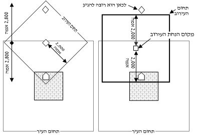
הֶעָרוֹת (1)
- לכאורה בערים גדולות ברוב המקרים הנחת ה'עירוב' לא תועיל. שכן למדנו בהלכה ד, שאדם ששבת מחוץ לעיר, אין העיר כולה נחשבת לו כד' אמות, ויש לו בתוך העיר רק אלפיים אמה ממקום שביתתו. ואם כן, כאשר ביתו של מניח ה'עירוב' רחוק אלפיים אמה מה'עירוב', ה'עירוב' בטל, ודינו כשאר בני עירו. וכך דעת בית מאיר, מחצית השקל, ועולת שבת בדעת השו"ע תח, א, וכ"כ א"ר תח, ח. ולדעת מ"א ומ"ב (תח, ג, ז, י), גם לשו"ע, מקום שביתתו במקום שהניח את ה'עירוב', אלא שהואיל ובכניסת השבת הוא בביתו, מותר לו ללכת בעיר לכיוון ה'עירוב', ואחר שיצא מעירו אסור לו לחזור לביתו. ולדעת הרמ"א, הואיל וביתו בעיר, למרות שהניח 'עירוב' מחוץ לעיר, יש לו זיקה לשני המקומות, לביתו ול'עירוב', ולכן בנוסף לאלפיים אמה שיש לו מה'עירוב', כל העיר נחשבת לו כד' אמות, והוא רשאי ללכת בכולה. וגם לאחר שיצא מהעיר מותר לו לחזור אליה וללכת בכולה. בבאו"ה תח, א, 'רחוק' בסופו כתב כדעת מ"א בשו"ע. אמנם יש שפסקו כדעת הרמ"א, ומהם: הב"ח, נוב"י (תנינא מט), וערוך השולחן. ובשעה"צ יא כתב שאין למחות ביד המקילים כרמ"א. וכיוון שדין תחומין מדרבנן, בשעת הצורך אפשר לסמוך על הרמ"א.
י״ג. סדר הנחת 'עירוב תחומין' וברכתו
הרוצה לקבוע עירובו על ידי הנחת מזון, צריך להניח מזון כשיעור שתי סעודות לפני השקיעה. אם הוא לחם, צריך שיהיה בו כשיעור נפח של שמונה ביצים, שהוא כ-400 סמ"ק (וי"א 6 ביצים). ואם רצה להניח מאכל שמלפתים בו את הפת, די שיהיה בו כשיעור שרגילים ללפת בו לחם כשיעור נפח של שמונה ביצים (שו"ע או"ח תט, ז). ואם רוצים להניח את ה'עירוב' עבור כמה אנשים, צריך להניח עבור כל אחד ואחד מזון שתי סעודות. כאשר מדובר באנשים רבים ורוצים לחסוך בכמות ה'עירוב', אפשר להניח שמן זית או ממרח שוקולד, שבשיעור קטן יחסית אפשר לטבל בהם לחם רב. ואפשר גם להניח חומץ כשיעור 'רביעית' (75 מ"ל) שהוא מספיק לטיבול שתי סעודות של ירקות (משנה ברורה שפו, לה; תט, לו). גם במשקה אפשר לערב, ושיעורו לכל אחד 150 מ"ל (שו"ע או"ח שפו, ו), שהוא כשיעור שתי רביעיות. ואין מערבים במים ומלח (עירובין כו, א).15
צריך שהמזון יהיה שייך לזה ש'העירוב' מועיל לו, שעל ידי כך הוא קובע את שביתתו במקום ה'עירוב'. וכאשר מניחים 'עירוב' עבור כמה אנשים, צריך בעל המזון להקנות להם את המזון, כדי שיהיו שותפים בו. עושים זאת על ידי אדם שיגביה את המזון ויתכוון לקנותו עבור כל הנצרכים ל'עירוב' (שו"ע או"ח תיג, א).
אם המזון שהניח ל'עירוב' נאכל לפני בין השמשות, נתבטל ה'עירוב'. אבל לאחר בין השמשות מותר לאוכלו, שהואיל וכבר קבע את מקום שביתתו בבין השמשות, הרי הוא מועיל לכל השבת (רמ"א, או"ח שצד, ב). אם הניח את מזון ה'עירוב' במקום שאיסור תורה מונע אותו מלקחתו בבין השמשות, כגון שצריך לפקח את הגל כדי להוציאו – אינו 'עירוב' (שו"ע או"ח שצד, ג; תט, ג-ד).
כשיניח את העירוב יברך: "ברוך אתה ה' אלוהינו מלך העולם אשר קדשנו במצוותיו וצוונו על מצוות עירוב". ויאמר: "בזה העירוב יהיה מותר לי לילך ממקום זה אלפיים אמה לכל רוח". ובדיעבד גם אם יאמר: "זה יהיה עירוב" יועיל לו. אבל אם לא אמר כלום – לא קבע 'עירוב' (שו"ע או"ח תטו, ד; משנה ברורה תטו, טו).
כאשר ה'עירוב' נועד לכמה אנשים, יפרש בפיו עבור מי ה'עירוב'. ויקפיד שיהיה בעירוב שיעור מזון שתי סעודות עבור כל אחד ואחד מהנצרכים לו (שו"ע או"ח תטו, ד). ואם ירצה שה'עירוב' יועיל לשבתות רבות, יאמר: "לכל שבתות השנה", וכל זמן שה'עירוב' קיים הוא מועיל (משנה ברורה טז).
אפשר לקבוע את ה'עירוב' על ידי שליח. אבל קטן, נכרי, או מי שאינו מאמין במצוות ה'עירוב' – אינו יכול להיות שליח. והשליח צריך לומר את הברכה והנוסח, ואם לא אמר דבר, אינו 'עירוב' (שו"ע או"ח תט, ח). ואם בעל ה'עירוב' יאמר: "בזה העירוב שמניח שלוחי אהיה מותר להלך ממקום ה'עירוב' אלפיים אמה לכל רוח" – עירובו עירוב (באו"ה 'ויאמר').
אין אדם יכול להניח 'עירוב' עבור חבירו שלא מדעתו. ועבור בני ביתו הקטנים רשאי אדם להניח 'עירוב', וה'עירוב' מחייב אותם. וכן יכול אדם להניח 'עירוב' עבור בני ביתו שהגיעו לגיל מצוות, אבל אם כשישמעו על ה'עירוב' ימחו ויאמרו שאינם רוצים בו, אין ה'עירוב' מחייבם. קטן בן פחות מגיל שש טפל לאמו, וה'עירוב' שמועיל לאמו מועיל גם לו (שו"ע או"ח תיד, א-ב).
הֶעָרוֹת (1)
- בגמרא עירובין כו, א, מבואר שניתן לערב במים ומלח מעורבים, וכ"כ רמב"ם (עירובין א, ח). והתוס' (שם 'אבל') כתבו על פי המשך הגמרא, שזה דווקא כשערב שמן עם המים והמלח. ובשו"ע או"ח (שפו, ה) פסק בסתם כרמב"ם וי"א כתוס', וכתב משנה ברורה (ס"ק כט) שהלכה להקל כדעה הראשונה.
י״ד. הנחת עירוב על תנאי לכל תושבי המקום
מותר להניח 'עירוב' על תנאי. למשל, היודע שבשבת יגיעו שני חכמים לדרוש בשני הישובים שבסביבה, אלא שעוד לא החליט לאן ילך, לישוב שבצד מזרח או לישוב שבצד מערב או שלבסוף יעדיף להישאר בביתו. יניח 'עירוב' אחד לצד מזרח ו'עירוב' אחד לצד מערב, ויתנה בליבו שבשבת יחליט מהו תחומו, האם לפי ה'עירוב' שבמערב או שבמזרח או לפי מקום ביתו. ואחר שהחליט על תחומו, שוב לא יוכל לצאת ממנו. ואם לא החליט אבל התחיל ללכת לפי תחום מסוים, גם בזה קבע את תחומו, ושוב אינו יכול לחזור בו וללכת לפי תחום אחר (עירובין פב, א; שו"ע או"ח תיג, א; משנה ברורה תיג, ח).16
יכול אדם להתנדב ולהניח 'עירוב' עבור כל תושבי המקום, ויאמר: "בזה העירוב יהיה מותר לכל בני המקום ואורחיהם לילך ממקום זה אלפיים אמה לכל רוח". וכל מי שידע על קיומו של ה'עירוב' מבעוד יום, היינו לפני כניסת השבת, למרות שלא גמר בליבו לשבות במקום ה'עירוב', אם יחליט במשך השבת שהוא רוצה ללכת לאותו צד, יוכל לסמוך עליו. אבל מי שלא ידע על קיומו של ה'עירוב' מבעוד יום, אינו יכול לסמוך עליו (שו"ע או"ח תיג, א).
אם היו בני המקום מרובים, ואין ביכולתו להניח מזון שתי סעודות עבור כל אחד ואחד מהם, אבל הוא יודע שלכל היותר ירצו עשרים אנשים לסמוך על ה'עירוב' הזה. יוכל להניח 'עירוב' בשיעור שתי סעודות לעשרים אנשים, ויאמר "בזה העירוב יהיה מותר לכל מי שירצה לילך ממקום זה אלפיים אמה לכל רוח במשך כל שבתות השנה". ועל ידי כך, יוכלו המעוניינים לסמוך על ה'עירוב' שלו, ובתנאי שידעו על קיומו בערב שבת (שו"ע או"ח תיג, א, באו"ה 'לכל אחד'). ונראה שכאשר ברור שיהיה מי שיסמוך על ה'עירוב' שהניח, יברך עליו, אבל כאשר יש ספק אם מישהו יזדקק לו, לא יברך.
אבל מי שהניח 'עירוב' בלא תנאי, תחומו נקבע לפי ה'עירוב', ואסור לו לשנות את תחומו לפי מקום ביתו.
***
יהי רצון שנזכה כולנו לקבל שבתות בשמחה, לשומרן כהלכה ולהתקדש בהן בזכרון האמונה, לעסוק בהן בדברי התורה ולהתענג בהן בסעודות ושינה, והנשמה שבקרבנו תאיר באור כפול, ואורה יתפשט על כל ימות השבוע, ומתוך תחום השבת תתפשט ברכה לכל מעשה ידינו, ונזכה לגאולה שלמה במהרה בימינו.
הֶעָרוֹת (1)
- נחלקו התנאים בדין זה. לדעת חכמים ור' יהודה במשנה עירובין לו, ב, מועיל תנאי לעירוב, שכן 'יש ברירה', היינו שכאשר יחליט על איזה 'עירוב' הוא רוצה לסמוך, יתברר למפרע שזה הוא ה'עירוב' שהניח בערב שבת. ובברייתא (עירובין לו, ב; לז, ב) מובא שיש סוברים ש'אין ברירה'. ובביצה לח, א, מובאת דעת רבי אושעיא, שבדין דאורייתא 'אין ברירה', ובדין דרבנן 'יש ברירה'. וכך דעת רוה"פ, ומהם: רמב"ם, ר"ת, רא"ש, רמב"ן, ר"ן, רשב"א, שו"ע יו"ד שלא, יא. וכן נפסק אצלנו שו"ע או"ח תיג, א; משנה ברורה תיג, ז, ולכן יכול להחליט בשבת באיזה 'עירוב' יקבע את תחומו. (אמנם יש סוברים אחרת: לר"י 'יש ברירה' גם בדאורייתא, ולמהר"ם כמובא במרדכי 'אין ברירה' גם בדרבנן)
משו"ע תיג, א, שכתב: "הכל לפי תנאו" משמע, שהקובע עירוב על תנאי, כגון, "אם יבוא החכם לצד מזרח, יהיה עירובי למזרח", כיוון שבא החכם למזרח, אינו יכול לחזור בו.
הַטֶּקְסְט: פְּנִינֵי הֲלָכָה, הָרַב אֱלִיעֶזֶר מֶלָמֵד, יְשִׁיבַת הַר בְּרָכָה – ph.yhb.org.il · דֶּרֶךְ סְפָרִיָּא, בְּרִשָּׁיוֹן CC BY-NC
הַמַּאֲגָר הַמָּלֵא: kol-toda.co.il